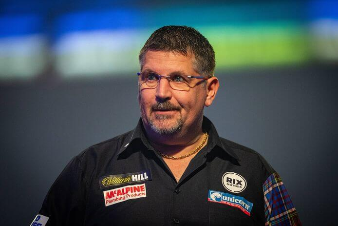
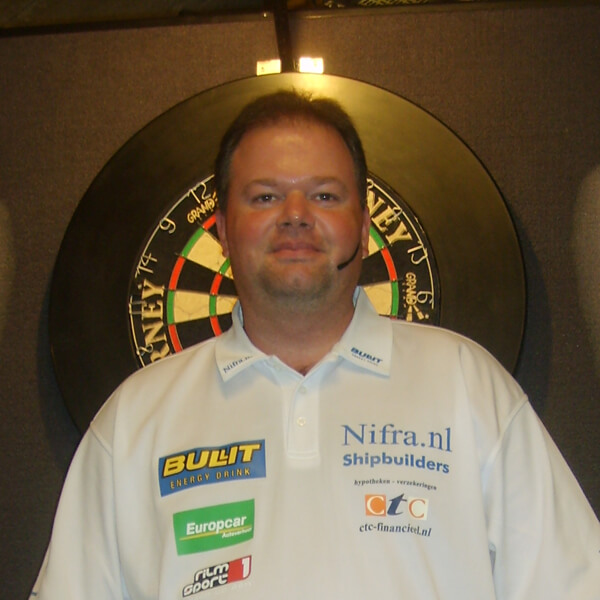
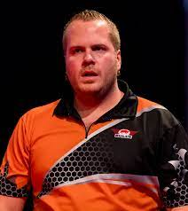
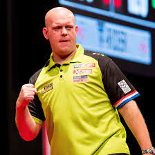
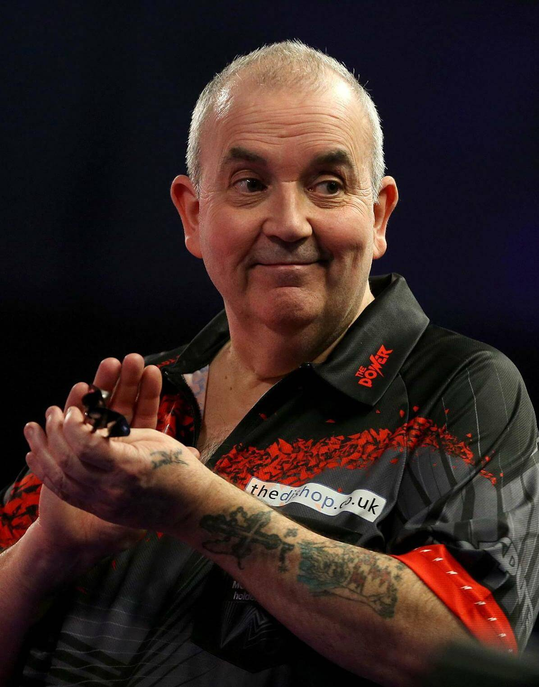
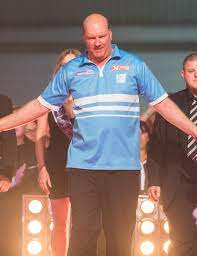
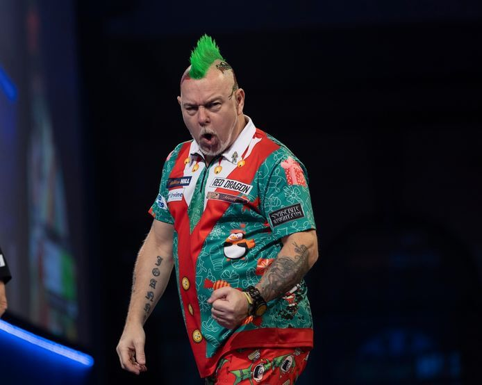

Home
Welkom op mijn pagina. Deze pagina bevat 3 bestanden; Home, overmij en contact. Aangezien darten een grote hobby van mij is heb ik hieronder wat afbeeldingen van bekende dartes geplaatst met een korte omschrijving.
Gary Anderson is een Schotse darter met de bijnaam The Flying Scotsman.
Raymond van Barneveld is een Nederlandse darter met de bijnaam Barney.
Dave Chisnall is een Engelse darter met de bijnaam Chizzy.
Dirk van Duijvenbode is een Nederlandse darter met de bijnaam Aubergenius.
Michael van Gerwen is een Nederlanse darter met de bijnaam mighty Mike.
Gerwyn Price is een darter uit Wales. Hij heeft als bijnaam The Iceman.
Phil Taylor is een darter uit Engeland. Hij is onlangs gestopt met darten en heet als bijnaa The Power.
Vincent van de Voort is een Nederlanse darter. Hij heeft als bijnaam The Dutch Destroyer.
Peter Wright is een Schotse darter. Hij heeft als bijnaam Snakebite.